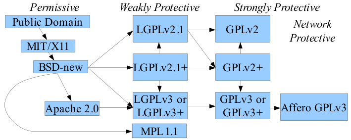

The Free-Libre / Open Source Software (FLOSS) License Slide
by David A. Wheeler
2017-01-26 (was 2007-09-27)
There are a large number of Free-Libre / Open Source Software (FLOSS) licenses, but only a few are widely used. The widely-used licenses tend to be compatible, i.e., the software can be combined to produce a larger work. The following “license slide” figure makes it easy to see when common licenses can be combined:
In this figure, the shaded boxes are the names of different FLOSS licenses. An arrow from box A to box B means that you can combine software with these licenses; the combined result effectively has the license of B, possibly with additions from A. To see if software can be combined, just start at their respective licenses, and find a common box you can reach following the arrows (aka “following the slide”). For example, Apache 2.0-licensed software and GPLv2+-licensed software can both reach “GPLv3 or GPLv3+”, so they can be combined using GPLv3 or GPLv3+. This figure has been carefully crafted so following a path determines if two licenses are compatible. For more information you must examine the license text, but this gives the basic answer quickly.
At the left are the “permissive” licenses, which permit the software to become proprietary (i.e., not FLOSS). At the top left is “Public Domain”, which strictly speaking isn’t a license but in effect it works like one. Public domain (in the sense of copyright law) means that there is no copyright on the work at all (note that public domain in the sense of export control law is different and not what we mean in this paper). You can do anything with public domain software (in the copyright sense), but it is rare; the software must be explicitly released to the public domain (some debate if that is possible in some jurisdictions) or be created by a U.S. Government employee in their official capacity. Next is the so-called “MIT” or “X11” license, which is very permissive (you can do just about anything except sue the author). Software under the MIT license is easily combined with the modern 3-clause Berkeley Software Distribution (BSD-new) license, which compared to the MIT license adds a clause forbidding the use of the author’s name to endorse or promote products without permission (it’s debatable if this clause actually does anything, since you typically have to have such permission anyway). Finally we have the Apache version 2.0 license.
At the right are the “strongly protective” (“strong copyleft”) licenses, which prevent the software from becoming proprietary. This includes the most popular FLOSS license, the GNU General Public License (GPL). The GPL has a version 2 (GPLv2) and 3 (GPLv3); a “+” afterwards means “version X or later”. GPLv2-only cannot be combined with the network-protective Affero GPLv3, but GPLv2+ (“version 2 or later”) can via GPLv3.
In the middle are the “weakly protective” (“weak copyleft”) licenses, a compromise between permissive and strongly protective licenses. These prevent the software component (often a software library) from becoming proprietary, yet permit it to be part of a larger proprietary program. This figure shows the rules when you are making other software part of the weakly protected component; there are other possibilities if you are only using the component as a library. The GNU Lesser General Public License (LGPL) is the most popular weakly protective license, and has a version 2.1 (LGPLv2.1) and 3 (LGPLv3). Note that LGPLv2.1 gives you permission to relicense the code under any version of the GPL since GPLv2. Another such license is the Mozilla Public License 1.1 (MPL 1.1), but the MPL has the serious drawback of being incompatible with the widely-popular GPL; you can’t even use an MPL module in a larger GPL’ed program.
For More Information:
The Open Source Definition (Annotated) - official definition of “open source software”, with some explanations. http://www.opensource.org/docs/definition.php
Free Software Definition - official definition of “Free software” (aka libre software; note the unusual capitalization). http://www.gnu.org/philosophy/free-sw.html
Frequently Asked Questions (FAQ) about the GPL - Explains many issues relating to the GPL, and includes a detailed compatibility matrix for various versions of the GPL and LGPL (including some details about how they can be combined). http://www.gnu.org/licenses/gpl-faq.html
Various Licenses and Comments About Them - Legal commentary by the Free Software Foundation (FSF) about many licenses. http://www.gnu.org/licenses/license-list.html
“Commercial” is not the opposite of Free-Libre / Open Source Software (FLOSS)” - Explains why most FLOSS is commercial software. https://dwheeler.com/essays/commercial-floss.html
Why Open Source Software / Free Software (OSS/FS, FLOSS, or FOSS)? Look at the Numbers! - Large collection of statistics on FLOSS programs. https://dwheeler.com/oss_fs_why.html
Make Your Open Source Software GPL-Compatible. Or Else - Explains why FLOSS should be released under a GPL-compatible license, and includes many statistics showing that the GPL is the most popular FLOSS license. https://dwheeler.com/essays/gpl-compatible.html
Maintaining Permissive-Licensed Files in a GPL-Licensed Project: Guidelines for Developers by the Software Freedom Law Center. http://www.softwarefreedom.org/resources/2007/gpl-non-gpl-collaboration.html
You may use, modify, and/or redistribute this document under the Creative Commons “Attribution-Share Alike 3.0 License”; the GNU Free Documentation License; or the GNU GPL (version 2 or later). This information is believed to be correct, but is not legal advice; for formal legal advice, please consult an attorney.